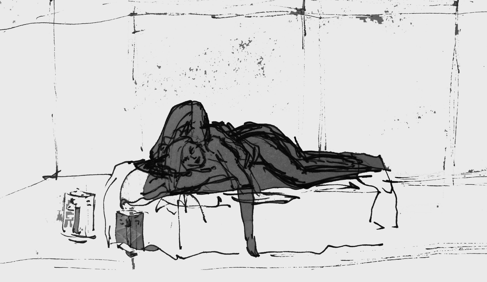
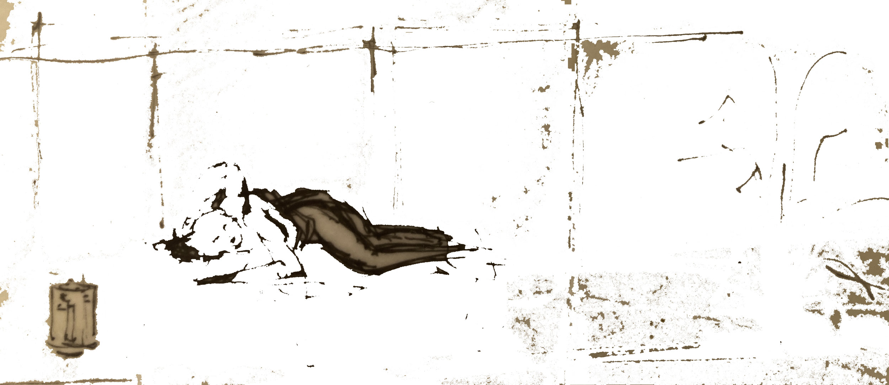
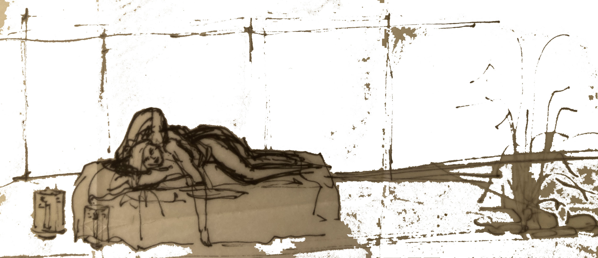
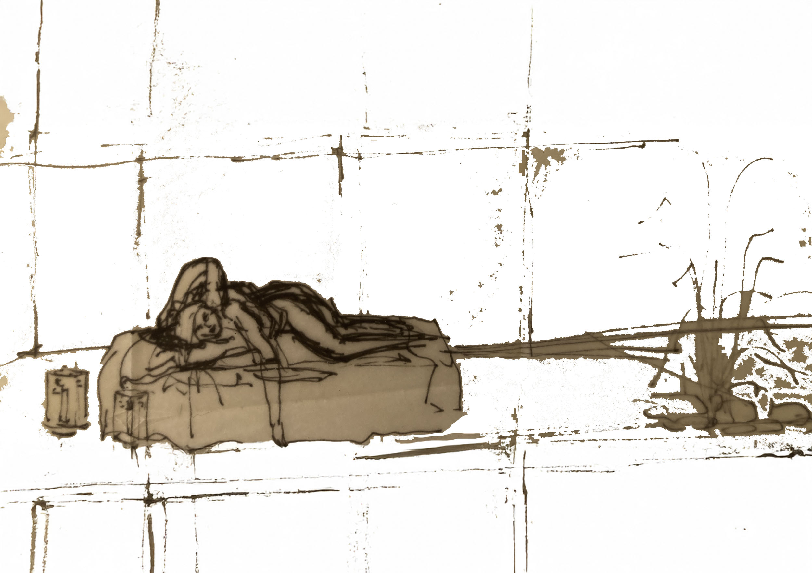

O desenho original foi realizado pela minha então companheira, a partir da observação de um momento quotidiano partilhado. Anos mais tarde regressei a essa imagem através da digitalização e da transformação digital. Entre o desenho original e o seu reencontro existe um intervalo de tempo, memória e experiência. O que permanece não é apenas o momento vivido, mas a forma como esse momento foi visto.
Visto por Ela




